Industry Cyber-Exposure Report: Deutsche Börse Prime Standard 320
By Rapid7 Labs
Oct. 10, 2019


Learn More
Register for our webcast on Thursday, Oct. 24, to hear directly from Rapid7 researchers about what this exposure among Deutsche Börse Prime Standard 320 organizations means.
Introduction
In the face of growing cybersecurity threats, it is increasingly important to measure the cost and concentration of “exposure,” which we define here as weaknesses in the public-facing configuration of internet-connected services. Having an accurate view of the resilience of organizations and industries against cyber-attacks can facilitate more accurate cost models, help target efforts to reduce exposure to the industries that need it most, and enhance cooperative efforts between government and the private sector to better protect users and companies alike. Measurement of industry-level exposure can also inform working groups that share cybersecurity information and threat intelligence within their industry.
For those who are keeping count, this is the fifth in a series of comprehensive and accurate public reports covering the real-world internet presence of a national economy to date. To understand current levels of exposure and resiliency in Germany, Rapid7 Labs measured the internet-facing security profiles of the Deutsche Börse Prime Standard 320[1] (referred to as “DB 320” hereafter). The DB 320 represents the largest, best-run companies in Germany, and has enough constituent companies to ensure sufficient statistical coverage in each German industry during Q3 2019 for:
- Overall attack surface (the number of exposed servers/devices);
- Presence of dangerous or insecure services;
- Phishing defense posture;
- Weak public service and metadata configurations; and
- Joint third-party website dependency risks.
By measuring these specific areas of cybersecurity, we are able to zero in on the most common problem areas in each of the surveyed industries and offer practical, specific defensive advice to each one.
An important factor to consider in the context of discovered weaknesses is that members of the DB 320 list are well-resourced organizations that typically attract top talent in all aspects of the business, including information technology (IT) and security. The discovery of such widespread weaknesses in the exposed services of these leading organizations suggests it is likely that there is even greater exposure and risk in smaller organizations with fewer human and financial resources available for securing their public internet resources.
Key findings include:
- DB 320 organizations, on average, expose a public attack surface of 88 servers/devices, with many companies exposing over 300 systems/devices.
- Of the appraised DB 320 organizations, 295 (91%) have weak or nonexistent anti-phishing defenses (i.e., DMARC) in the public email configuration of their primary email domains, with 10 (3%) having invalid records. This is the weakest anti-phishing showing of all the Rapid7 Industry Cyber-Exposure Reports (ICERs) to date, edging out the Nikkei 225 study results by 1%.[2]
- While the majority (94%) of large corporate websites surveyed enforce SSL/TLS security, this critical security and privacy control is not enforced on the primary websites of 21 (6%) of DB 320 organizations. This leaves visitors open to a wide array of common and potentially devastating attacks by adversaries in a position to modify web content as it is being transmitted.
- Eleven of the 19 industry sectors had at least one organization with malware infections, with Industrial and Software organizations showing monthly signs of regular compromise. Incidents across industries ranged from company resources being co-opted into denial-of-service (DoS) amplification attacks to signs of EternalBlue-based campaigns similar to WannaCry and NotPetya.
- Organizations across industry sectors in the DB 320 signal how many and which cloud service providers they use in their public domain name system (DNS) metadata, with 82 organizations using between two and 10 cloud service providers. This information can be used to craft highly effective, targeted attacks, among other actions.
- Severely vulnerable services such as Telnet and Windows SMB file-sharing were exposed in only a handful of organizations. When present, generally only a single severely vulnerable asset was exposed, making this the strongest showing when compared to all previous ICERs.
- Most organizations in every sector expose services that rely on seriously outdated software on their internet-facing systems.
The details behind these findings are presented in the remainder of the report.
[1] Deutsche Börse Prime Standard 320 list, https://www.deutsche-boerse-cash-market.com/dbcm-en/instruments-statistics/statistics/listes-companies (Last accessed Aug. 12, 2019)
[2] This figure was 73% for the US-centric Fortune 500, 68% in the Australasia-centric ASX 200, 88% for the UK-centric FTSE 250, and 93% for the Japan-centric Nikkei 225.
Overview of Results
Attack Surface by Sector
The Methodology section details how Rapid7 uses Project Sonar[3] to scan the internet for exposed systems and devices. On average, each DB 320 organization exposes roughly 88 services. This number is neither good nor bad, but each exposed node increases the attack surface of an organization, potentially boosting the opportunity for attackers to gain a foothold. To put it another way, each exposed server or device must be properly configured, managed, patched, and defended to reduce the risk of a cyber-attack. There is no rule to indicate when the number of exposed services tips the balance of risk, since many factors can influence how well an organization can protect its internet-exposed resources. Still, the more exposed systems, the more opportunity attackers gain, regardless of defensive capabilities.
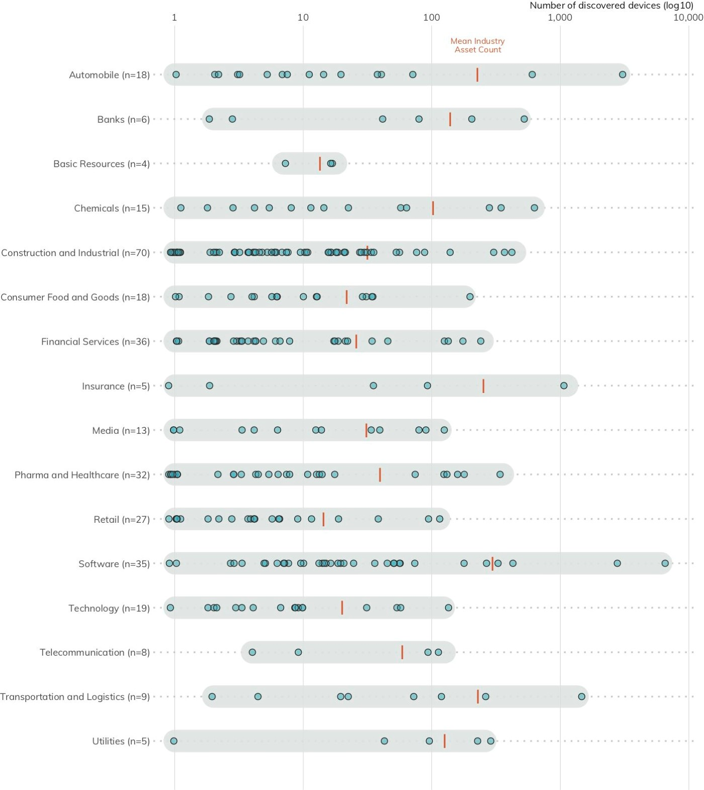
Taking a look at Figure 1, there are four outliers with over 1,000 exposed services: one each in Automobile, Insurance, and Transportation and Logistics, plus two in Software. If your business processes do require increased levels of asset exposure (as it seems is the case for these organizations), you must have commensurate vulnerability management, patching, and monitoring practices in place to facilitate a speedy response to discovered weaknesses or attempts by attackers to compromise your services. If your business processes are not the direct reason for this exposure and/or you do not have a well-oiled asset identification and configuration management process in place, working to reduce the surface area should be paramount, followed by plans to shore up those IT/security operational areas.
Recommendation: Reduce your attack surface. Organizations should strive to only expose systems and devices on the internet if doing so is necessary to support business processes, and must further ensure they have robust asset identification and configuration management processes in place to help prevent these exposed systems from becoming enterprise entry points for attackers.
[3] Rapid7, Project Sonar, https://www.rapid7.com/research/project-sonar (Last accessed Aug. 12, 2019)
Phishing Defense Capabilities
Phishing remains one of the most common cyber-attack vectors corporations face today. The Anti-Phishing Working Group (APWG), a cross-industry phishing watchdog group, collected a record-breaking quarter-million phishing reports in the third quarter of 2018.[4] Unfortunately, most organizations in the DB 320 have not implemented a modern safeguard against phishing attacks.[5]
As noted in the Methodology section, DNS records expose a means to identify how well an organization has configured its email service for protection from spam and phishing through the analysis of Domain-based Message Authentication, Reporting and Conformance (DMARC) records.[6] DMARC enables organizations to:
- Signal that they are using email authentication to prove emails are not forged;
- Provide an email address to gather feedback about messages using their domain, legitimate or not; and
- Apply a policy to messages that fail authentication (one of “
none”, “quarantine”, or “reject”).
No DMARC records—or a DMARC record of “none”—means this first-line-of-defense protection from spam or phishing attacks is absent. However, a “none” record may be a signal that an organization is on the path to email safety and is in the process of validating its DMARC configuration before enabling more active email defense measures.
Properly configured DMARC records with “quarantine” or “reject” have active email defense measures in place. Figure 2 shows the percentage of DMARC adoption (by configuration category) of DB 320 organizations within a given sector. Green indicates that organizations within that sector have either adopted and implemented DMARC or are on the path toward DMARC adoption. Unfortunately, the results indicate that the vast majority (73%) of the DB 320 have not embraced modern email safety configurations, with an additional 3% having invalid DMARC records, which boosts their risk of phishing attacks. Only 15 organizations (5%) have DMARC configured to “quarantine” or “reject”.
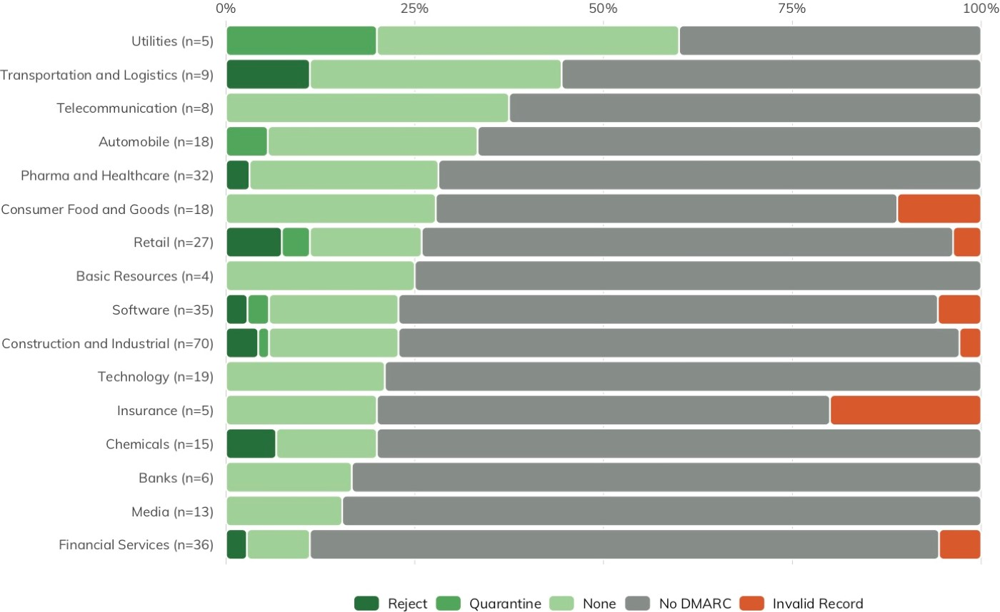
Since there is no direct scanning involved, DNS records are not impacted by the Project Sonar opt-out blacklist (described in the next section). Therefore, we can paint a more complete picture of the email safety configurations of the entire DB 320 than we can with active scanning for vulnerable services. The Further Work section outlines additional steps that can be used to increase the scope of the examination in order to paint a wider picture of email safety.
Unlike the commonly malformed DMARC record findings (SPF record used in a DMARC context) in the Nikkei 225 ICER, the invalid DMARC records found in the DB 320 list were highly technical misconfigurations both in the DMARC record itself and how the DMARC records work in conjunction with SPF record settings and other dependent service records. This underscores the need to have a process in place to initially and regularly validate these email safety configurations to ensure they are effective.
Recommendation: Implement DMARC. DMARC controls have been available for several years and are supported by virtually all major email providers. Originally deployed as a mitigation against phishing attacks that target a company's external customers, DMARC also has the added benefit of making it much more difficult to spoof internal email addresses. Planning and deploying a properly restrictive DMARC configuration takes time,[7] which is reflected in the three DMARC policy levels, but this time investment can vastly improve a company's internal and external email security posture.
[4] Phishing Activity Trends Report, http://docs.apwg.org/reports/apwg_trends_report_q3_2018.pdf (Dec. 11, 2018)
[5] At least on their primary domains as noted by the DB 320 index constituent list. These organizations may have DMARC on brand sites, but only the “vanity” domains were used to match the methodology of previous reports.
[6] DMARC, https://dmarc.org (Last accessed Aug. 12, 2019)
[7] At CyberUK 2019, the UK’s NCSC indicated that it can easily take up to 18 months to go from “No DMARC” to “reject” for organizations with complex or diverse email communications operations.
What a Difference a Year Makes: Revisiting Our Inaugural Fortune 500 ICER One Year Later
A primary goal of these Industry Cyber Exposure Reports (ICERs) is to provide insight into how well cybersecurity controls are being implemented across the globe, with the hope that this external, composite view will effect noticeable, positive change that will make us all safer when we venture online.
It’s been just over a year since we released our inaugural ICER on the Fortune 500, so we decided to take a quick look at a key control, DMARC (email safety), one year later to see whether there has been any improvement. Spoiler alert: There has been!
Before we dig into the results, we need to note that we’ve modified the way we check for DMARC since the 2018 Fortune 500 report. Previously, we did a DMARC presence and syntax validity check for each set of mail domains and/or apex domains (depending on how the organizations configured their DNS records). Unfortunately, DMARC doesn’t exist in the vacuum of a single DNS TXT record and requires accurate configurations of a combination of DNS records types to make the system work. Starting with the FTSE 250 ICER, Rapid7 Labs began doing a full check of MX, SPF, DKIM, and DMARC for each organization. These enhanced checks helped identify a serious, common configuration issue in the Nikkei 225 ICER and—after using the new methodology on the Fortune 500 domain corpus—also identified different types of issues on a handful of these domains.
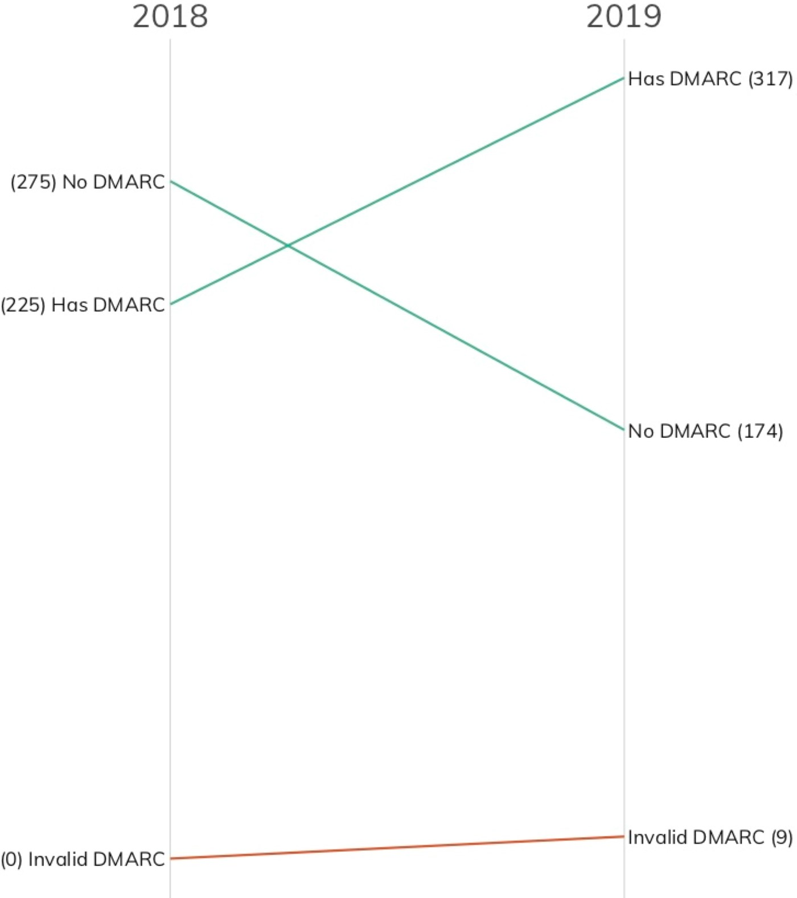
As seen in the figure above, 92 organizations added a valid DMARC configuration of at least “none” to their primary email domain, and a majority of these organizations now have a proper DMARC configuration in place. With the constant din of bad news in cybersecurity, this is a welcome statistic to report.
Unfortunately, bad news often accompanies good news, and our enhanced DMARC checks identified nine invalid records. Unlike the Nikkei 225 findings, these were diverse and nuanced errors ranging from improper upstream DMARC reporting configurations to mixing up DKIM and DMARC to just syntactically invalid DMARC. Having invalid DMARC is a bit worse than not having DMARC at all, as organizations may erroneously think their email setup is now much safer than it really is.
You can dive into the figure below to see which industries are doing the best when it comes to leveling up their email safety. It's great to see the relatively significant moves in the "none" category—this is a signal that 59 companies in the Fortune 500 are taking real steps to shore up their anti-phishing defenses when they haven't before.
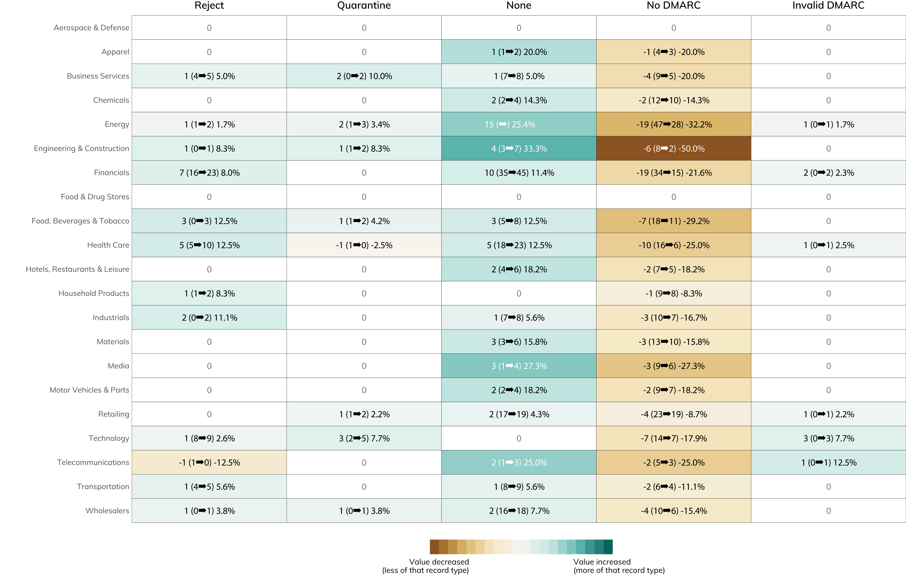
Lack of SSL/TLS
Rapid7 Labs started looking at the configuration of SSL/TLS in the FTSE 250 ICER[8] when it became apparent many FTSE organizations were not auto-upgrading HTTP requests. Previously, organizations that made up the data sets for the Fortune 500 and ASX 200 studies all had primary web server configurations that ensured sessions were automatically upgraded to use SSL/TLS (i.e., “HTTPS”) if the initial connection was made over plaintext HTTP.
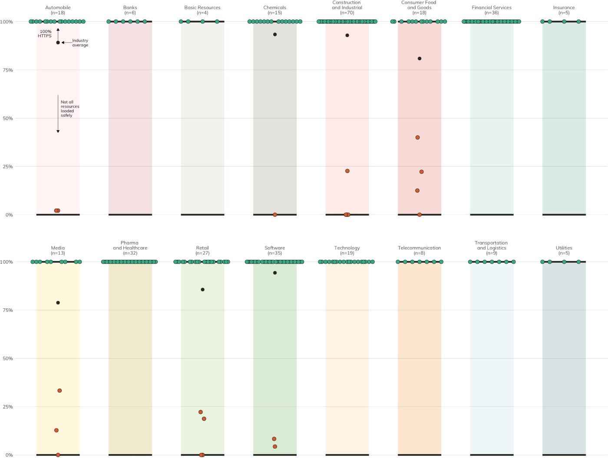
Unfortunately, 21 (6%)[9] of DB 320 organizations do not auto-upgrade HTTP requests to HTTPS (Figure 3), which leaves visitors open to an array of person-in-the-middle attacks.[10]
Just because a site has an HTTPS auto-upgrade does not mean it has well-configured its HTTPS-enabled websites. Figure 4 is a heatmap of the HTTP headers that come along for the ride with the examined websites. Column headers in orange indicate headers that should be removed or configured to disclose as little information as possible. Attackers can learn quite a bit about internet-exposed assets from metadata like this.
Headers in green are considered essential[11] and can add layers of protection from cross-site scripting attacks and malicious use of iframes to co-opt your site visitors, as well as alert you when malicious resources are trying to be loaded from your site. Use of these critical headers lies between 0 and barely 10% across all industries.
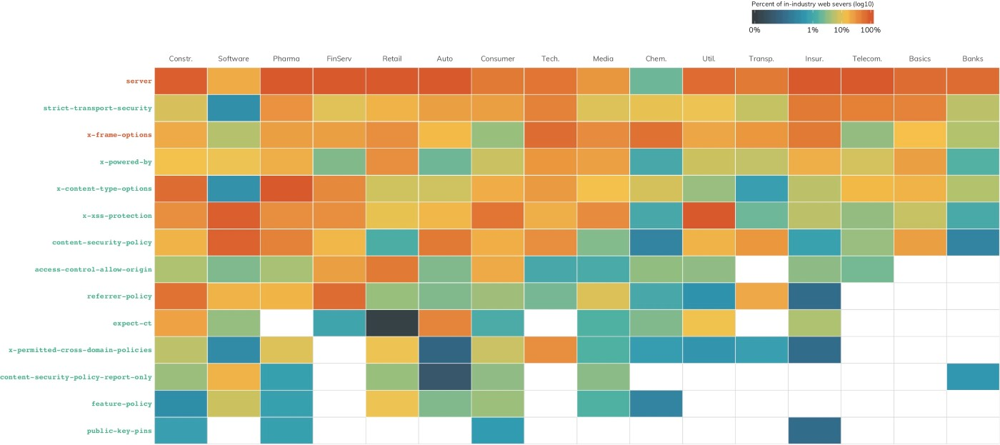
Recommendation: Enable HTTPS and ensure headers are well-configured. This is an egregious configuration oversight that all impacted DB 320 members should strive to remediate as soon as possible. HTTPS is the industry standard for all well-known domains, with many browsers labeling the cleartext HTTP protocol as "not secure."[12] Along with supporting HTTPS, make sure you are using all the configuration controls at your disposal to keep your site and your visitors safe.
[8] https://blog.rapid7.com/2019/06/11/rapid7-releases-industry-cyber-exposure-report-ftse-250/ (June 11, 2019)
[9] Seventeen websites rejected automated JavaScript-enabled probes.
[10] Man-in-the-Middle (MITM) Attacks, https://www.rapid7.com/fundamentals/man-in-the-middle-attacks/ (Last accessed Aug. 12, 2019)
[11] The OWASP Secure Headers Project, https://www.owasp.org/index.php/OWASP_Secure_Headers_Project (Last modified Jan. 7, 2019)
[12] All Chromium-based browsers, such as Google Chrome, Brave, and recent versions of Microsoft Edge, mark HTTP as "not secure," and Mozilla browsers such as Firefox mark HTTP pages as "not secure" when there are form elements. Mozilla browsers are expected to behave more like Chromium browsers by the end of 2019.
Evidence of System Compromise
Much of the data in this report is gathered through active scanning and DNS queries, but Rapid7 also maintains a global passive sensor network, Project Heisenberg.[13] The Heisenberg sensor network is described in detail in the Methodology section, but in short, the network is a collection of honeypots with unadvertised services such as HTTP/HTTPS, Telnet, SMB, and so on, where no legitimate internet traffic should be expected.
Figure 5 shows the unique, daily connections with the Heisenberg sensor network for all organizations in a given sector. Ideally, this chart should be blank. However, the chart shows lapses in control in 11 out of 19 sectors in this data set. Some sectors, such as Industrial and Software, appear to have slightly higher systemic rates of control failures, but this view does not tell the whole story, since many modern networks sit behind a single internet address through which hundreds to thousands of employees, contractors, and devices communicate.
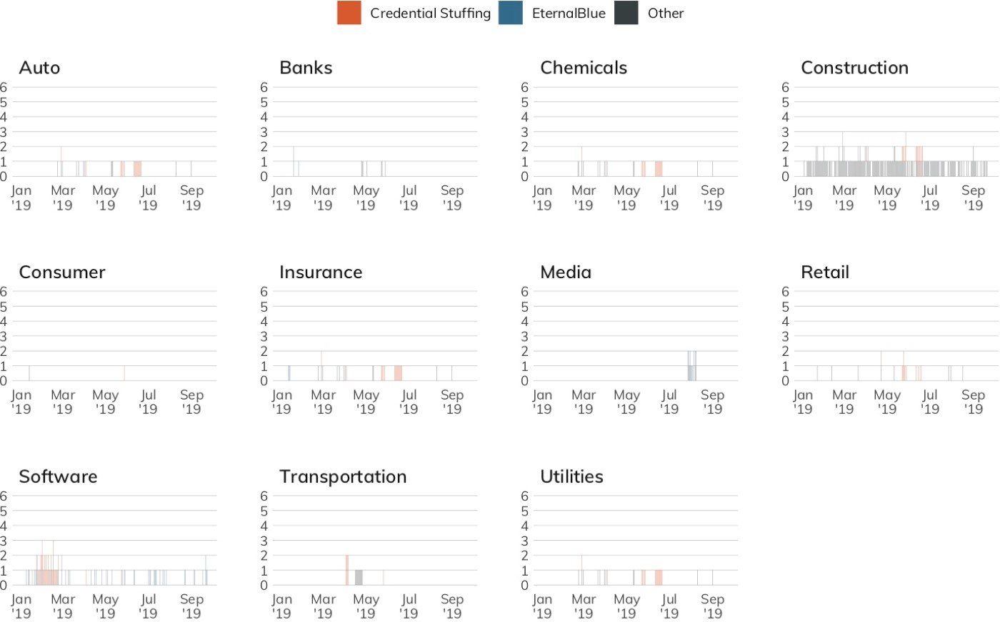
Figure 5 is handy to show presence, but we need another view to show volume. In contrast to the unique connection footprint view, Figure 6 shows the total daily connections to Project Heisenberg across organizations in the measured industry sectors. Note that the Y-axis is not uniform across the panels. This freescale lets us “zoom in” on each industry and more easily distinguish potential patterns and problems. We see that just because an industry has a small number of unique nodes connecting to Heisenberg sensors does not mean they are inactive. Larger volumes in this view could indicate a mass malware infection internal to an organization (i.e., dozens, hundreds, or thousands of infected systems reaching out to the internet) or may be indicative of a few systems being co-opted into DoS campaigns.
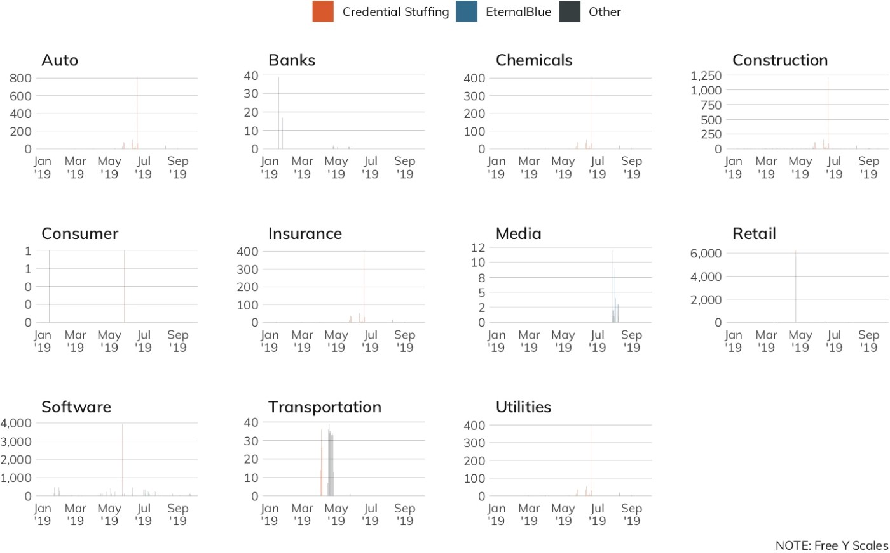
Some connections are more serious than others, and four of the top connection types to Heisenberg from organizations in this study are especially bad. As Figure 7 shows, throughout the first half of 2019, Heisenberg recorded daily connections that indicate multiple organizations were impacted by the following:
- Malware associated with SMB (i.e., WannaCry, WannaMine, and NotPetya);
- DNS DoS attacks;
- Mail access brute-forcing;
- Telnet/FTP/IMAP/LDAP cleartext credential brute-forcing; and
- SSH encrypted credential brute-forcing.
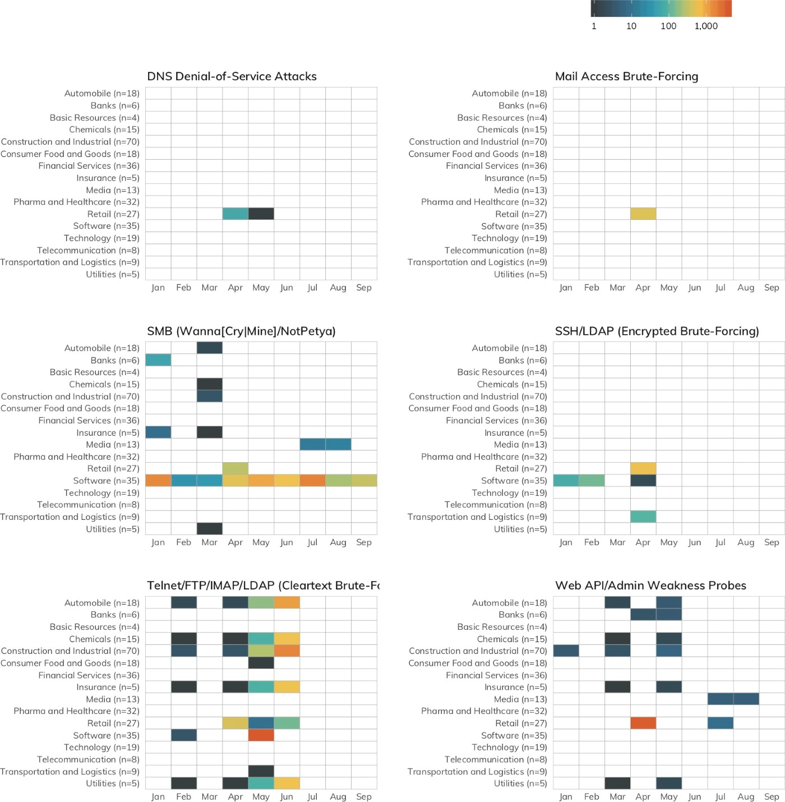
Recommendation: Keep an eye on egress filters. Some level of honeypot traffic is to be expected; after all, the modern internet has plenty of opportunistic attackers seeking out low-hanging fruit. In the case of the observed misdirected traffic, networking mistakes can and do happen. With that said, traffic that is unambiguously sourced from the DB 320 suggests a lack of egress filtering from these organizations. Network administrators are accustomed to making sure connectivity is both smooth and uninterrupted and fixing things when connections fail. On the reverse side, though, their job is to also prevent errant and malicious traffic from leaving their domains. Outbound traffic rules should be regularly audited and tested, both from the data center and from deep inside the LAN, to ensure that a misconfiguration doesn't result in an accidental self-breach.
[13] Rapid7 Project Heisenberg, https://www.rapid7.com/research/project-heisenberg/ (Last accessed Aug. 12, 2019)
Third-Party Risk Exposure
There is no question that the internet has become the backbone of international commerce in virtually every industry and locale. This interconnectedness means no organization is an island and is a central reason why it is almost impossible to have a website, business process, or digital storefront without relying on some outside party. As a firm’s digital footprint expands, the more the details of these third-party dependencies leak out through necessarily exposed metadata required to keep these services connected and operating smoothly.
An unfortunate result of this is that every organization in the DB 320 is vulnerable to targeted phishing attacks based on the third-party service metadata they expose in their DNS records. In addition, every DB 320 organization places itself and its website visitors at risk due to reliance on improperly configured third-party web services, with only three primary websites providing even a thin layer of third-party protection through the use of content security policies.[14]
When an organization uses third-party resources to supplement its online assets, it takes on risks associated with those third-party resources. Vulnerable third-party resources can be used as a conduit to attack the first-party organization. For example, in September 2018, security researchers noted that many sites are vulnerable to web-based credit card-skimming attacks due to their reliance on third-party content delivery networks (CDNs).[15] In another example, the Syrian Electronic Army used a compromised CDN in 2015 to take over a major news media outlet’s web presence and use it to send custom push notifications to readers.[16]
For the purposes of this study, “third-party risk” exposure is defined as being present either when:
- A measured organization is seen to be relying on resources from a third-party site when building its own websites and applications; or
- A measured organization exposes which third-party services it actively uses by leaving potentially sensitive artifacts in its published metadata.
The Methodology section outlines how attributes of third-party risk are collected and analyzed.
In Figures 8–11, each heatmap shows the breakdown of the most used third-party sources across all industries. The colors represent the normalized ranking; i.e., rather than color by total count, a normalized index value is calculated based on the number of organizations in a given industry. Both the raw counts and normalized index values are shown to enable comparison by either measure.
We have removed tag managers[17] from the third-party services list starting with the Nikkei 225 ICER, since they can help protect your website and website visitors when used properly, rather than introducing each to additional risk.
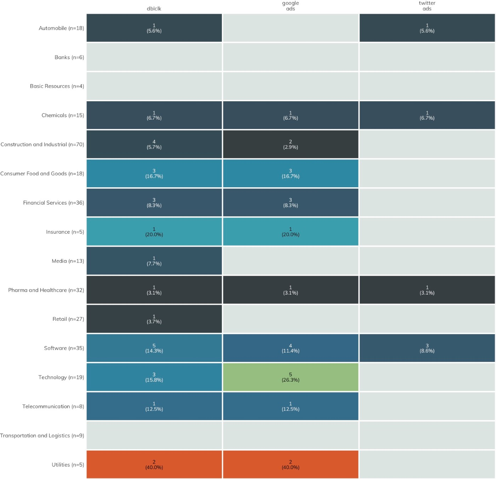
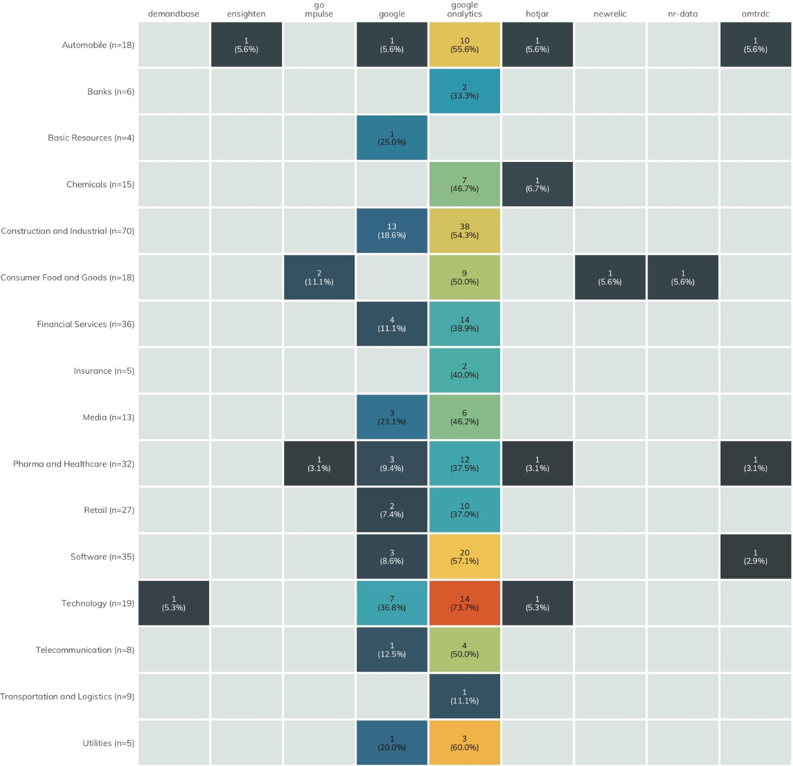
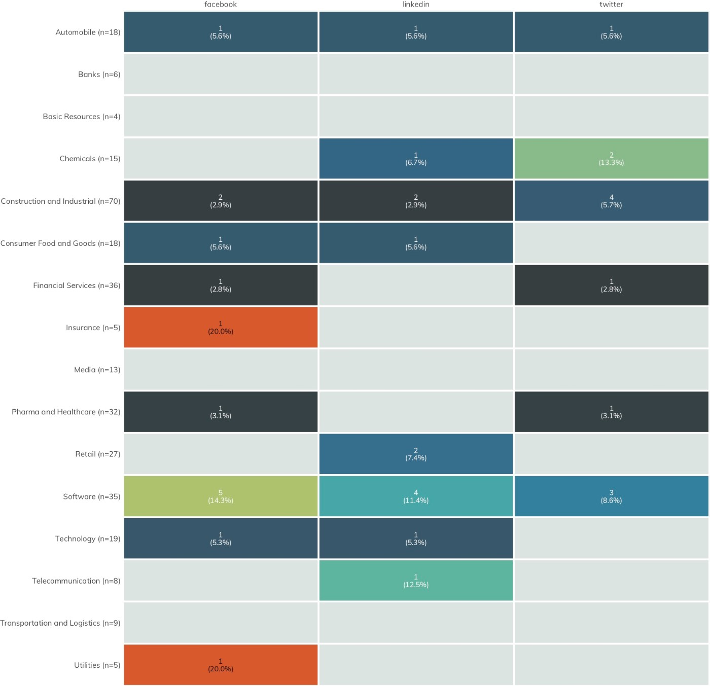
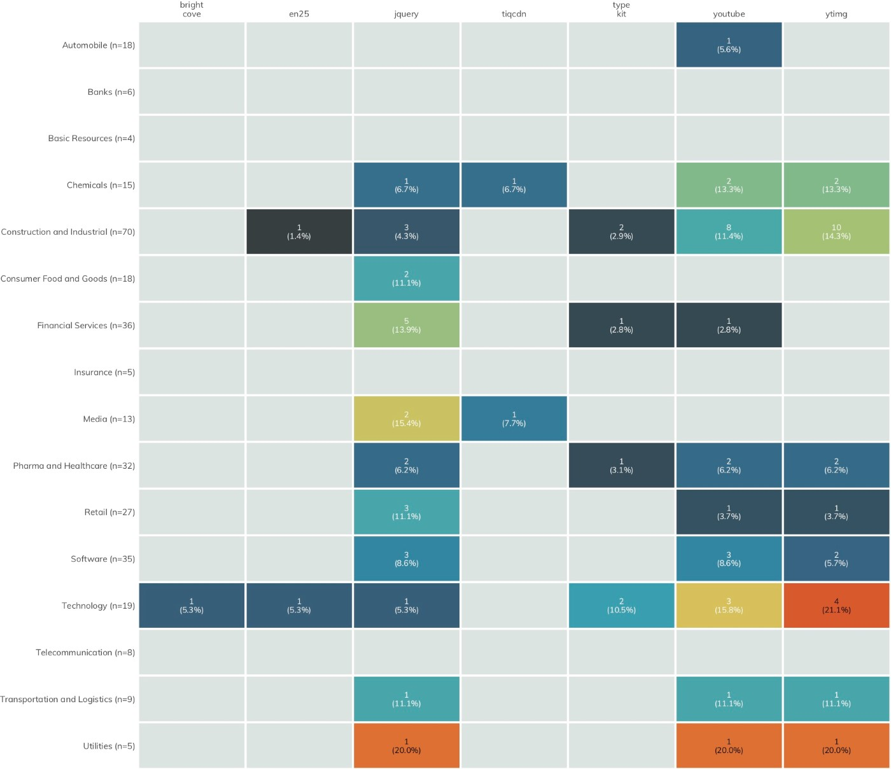
Some of these third-party services are likely resilient to cyber-attacks and do not meaningfully contribute to the first-party organization’s degree of exposure. For example, it is unlikely that Google Analytics would be sufficiently breached as to be an unwitting conduit for malicious activity to client organizations. However, widespread common exposure for third-party services such as DoubleClick—which has regular occurrences of malicious ads in its network—does increase the shared risk across the sectors.
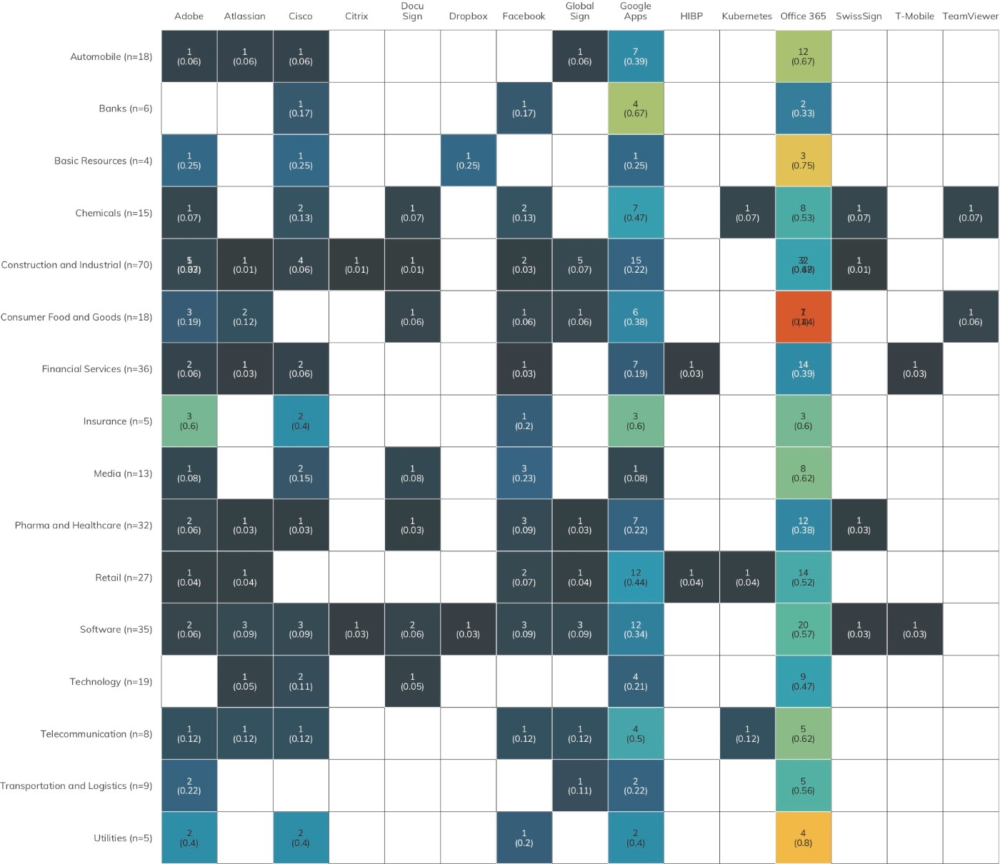
Figure 12 focuses attention on the latter component of third-party exposure: detecting the use of vendor applications/cloud services.
In addition to providing the connection address for names such as <www.rapid7.com>, DNS records can identify secure email configurations, as detailed in the Phishing Defense Capabilities section. DNS records can also reveal which third-party providers an organization uses for everything from application development to cloud hosting environments to file-sharing services and more.
One way these services are exposed is through the use of verification information stored in free-form TXT records. To illustrate, Table 1 shows a sample of DNS TXT records for rapid7.com:
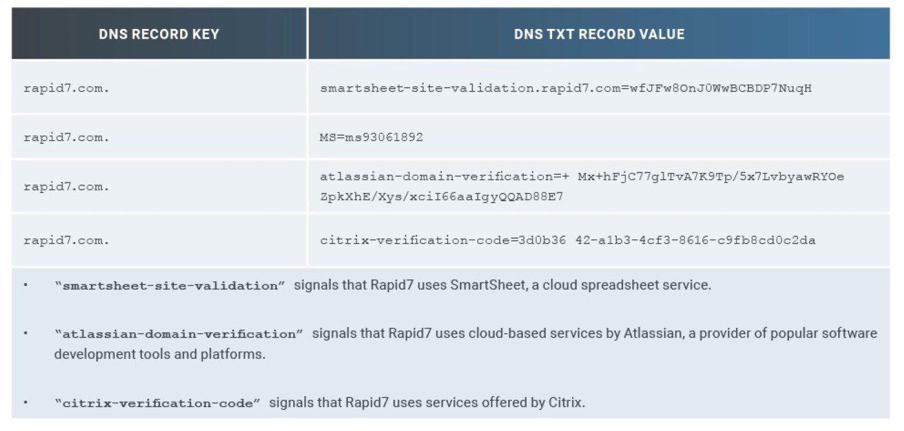
Rapid7 researchers used Project Sonar DNS collection data to examine the TXT records of the DB 320 organizations in this study. Only well-known domain names were used (expanding on this effort to use additional domains is covered in the Further Work section), and Figure 14 only focuses on the most prevalent or well-known third-party services.
It may come as no surprise that every industry sector uses Microsoft Office 365 to some extent, and it is highly unlikely that Microsoft is going to fall prey to a non-nation-state attack that would enable Office 365 to be a malicious gateway into organizations. There is a high prevalence of Google Apps across the DB 320 as well, plus a fairly well-populated use of nearly all the other resources of interest.
If organizations begin to stray from established and resilient service providers, they boost their risk of successful phishing and other types of attacks by observant, capable attackers who simply need to make a handful of DNS queries to create a list of targets.
Recommendation: Reduce third-party risk exposure. These findings may not seem like major risks when reviewed individually. In truth, many of these “validation” records are only required once and can be removed after the initial validation has occurred. These records prove that one is the true owner of a given domain, since in theory, only the true owner can add, modify, or delete DNS entries. If one were to look at those records in aggregate, it might be possible to find a common, shared third-party service in use by a large number of organizations or a boutique service provider used by only a handful of organizations. These may be high-value targets for malicious actors that seek to compromise multiple organizations, making resiliency of these third-party services all the more important.
[14] Content Security Policies, https://content-security-policy.com/ (Last accessed Aug. 12, 2019)
[15] Kevin Beaumont, “Magecart — new tactics leading to massive unreported fraud,” DoublePulsar, Sept. 19, 2018, https://doublepulsar.com/magecart-new-tactics-leading-to-massive-unreported-fraud-5211c9883dea
[16] Thu Pham, “Malicious Hackers Take Over Media Sites via Content Delivery Network Providers,” Duo Security, May 19, 2015, https://duo.com/blog/malicious-hackers-take-over-media-sites-via-content-delivery-providers
[17] Tag management system, https://en.wikipedia.org/wiki/Tag_management_system (Last accessed Aug. 12, 2019)
Inappropriate Services: SMB and Telnet
The type of service being exposed has a direct impact on the severity of exposure (i.e., some services are less “safe” than others). Figure 13 shows that organizations in the DB 320 are not immune to attacks that target these two critically vulnerable services: Telnet and Windows file-sharing.
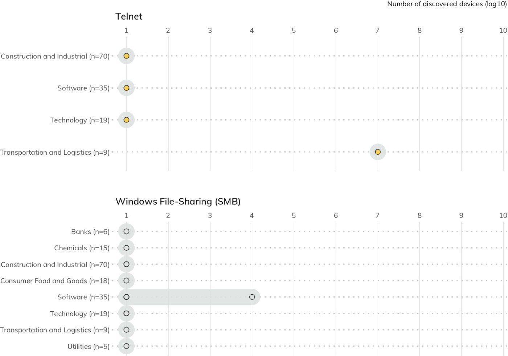
One service in particular, Server Message Block (SMB), is one of the most dangerous services for a system to expose. SMB is an all-in-one file-sharing and remote administration protocol, usually associated with Windows, that has been an attractive target for attackers and researchers alike for decades. MS03-049 in 2003, MS08-067 (Conficker) in 2008, and MS17-010 (EternalBlue) in 2017 all arose from the complexity of this protocol and its central nature to Windows networking.[18] Recently, vulnerabilities in the SMB service were at the heart of the WannaCry and NotPetya attacks, which crippled networks and caused significant outages to critical business processes that cost many companies millions of dollars in lost revenue.[19]
Telnet exposure creates risks similar to SMB exposure. Telnet dates back to the early days of the internet, with the official “modern” standard dating back to 1983.[20] Telnet is a cleartext protocol that is used to directly log in to servers and network equipment, usually to issue commands and run scripts directly at the operating system level of the device. Telnet services have a history of vulnerabilities and exposures that put organizations at risk of credential theft, passive and active eavesdropping, and remote code execution. The cleartext nature of the protocol means that an attacker in the proper network position can read any usernames, passwords, or data being transmitted—and endpoints with weak, default, or eavesdropped passwords can be hijacked to run malicious code directly by the operating system.
The singular positive takeaway is that only a handful of sectors have members exposing these troublesome services, and the ones that do only have only one or two member organizations exposing Telnet or SMB. While a total absence of Telnet and SMB on today’s internet would be ideal, the DB 320 has had the strongest showing so far when it comes to preventing SMB/Telnet exposure, both in absolute and relative terms, especially when compared to the Fortune 500.[21]
Recommendation: Eliminate public-facing SMB and Telnet. Though the presence of these services—especially Windows SMB—is extremely small among DB 320 organizations, there is no safe way to expose SMB services to the public internet. In light of this, Microsoft has made efforts to reduce SMB exposure for normal desktop and laptop clients. For example, current Microsoft documentation explicitly recommends blocking SMB on an internet perimeter firewall, and Windows 10 desktops automatically firewall access to port 445 by default.[22] Even exposing one asset with SMB running could end up spreading (or re-spreading) WannaCry, NotPetya, or modern variants across an entire organization. There is also no technical or practical justification for running a Telnet service today. It has been superseded by the Secure Shell (SSH) Transport Layer Protocol, which provides encryption-in-transport and encourages the use of digital certificates when authenticating connections.[23] If a device is truly incapable of running SSH rather than Telnet due to a lack of local computing resources, that device is simply too insecure by design to expose to the public internet, regardless of the reasoning for staying with a 40-year-old unencryptable protocol. Of note, about a quarter (80) of the DB 320 expose SSH services without exposing any Telnet services, so it seems there has been some acknowledgement of the strengths of this protocol.
[18] Rapid7, National Exposure Index 2018, “Inappropriate Services,” pg. 14, June 7, 2018, https://www.rapid7.com/globalassets/_pdfs/research/rapid7-national-exposure-index-2018.pdf.
[19] Bob Rudis, “No More Tears? WannaCry, One Year Later,” Rapid7, May 14, 2018, https://blog.rapid7.com/2018/05/14/no-more-tears-wannacry.
[20] J. Postel and J. Reynolds, Telnet Protocol Specification, Internet Engineering Task Force, May 1983, https://tools.ietf.org/html/rfc854.
[21] Rapid7, Industry Cyber-Exposure Report: Fortune 500, pgs. 13–14, Dec. 11, 2018, https://www.rapid7.com/info/industry-cyber-exposure-report-fortune-500.
[22] Microsoft, Guidelines for blocking specific firewall ports to prevent SMB traffic from leaving the corporate environment, Aug. 31, 2016, https://support.microsoft.com/en-us/help/3185535/guidelines-for-blocking-specific-firewall-ports-to-prevent-smb-traffic.
[23] T. Ylonen and C. Lonvick, The Secure Shell (SSH) Transport Layer Protocol, The Internet Society, Jan. 2006, https://tools.ietf.org/html/rfc4253 (Last accessed Aug. 12, 2019)
Older, Unpatched Web Service Exposure
Keeping internet services configured, patched, and running supported versions of operating systems and internet-facing applications can go a long way toward thwarting attackers. Failure to use updated software versions puts organizations at greater risk of attack through known vulnerabilities that are left unpatched. Unfortunately, most organizations in the DB 320 are running older and often unsupported versions of the three most prolific web servers: Microsoft’s Internet Information Services (IIS), Apache HTTPD, and F5's nginx.
Microsoft IIS
Microsoft’s IIS was the third most popular web server on the internet in August 2019, according to Netcraft,[24] but it is No. 1 among large German companies. Figure 14 shows Project Sonar discovered 2,764 IIS servers with attributable version numbers in 169 organizations spanning 18 of 19 DB 320 sectors.
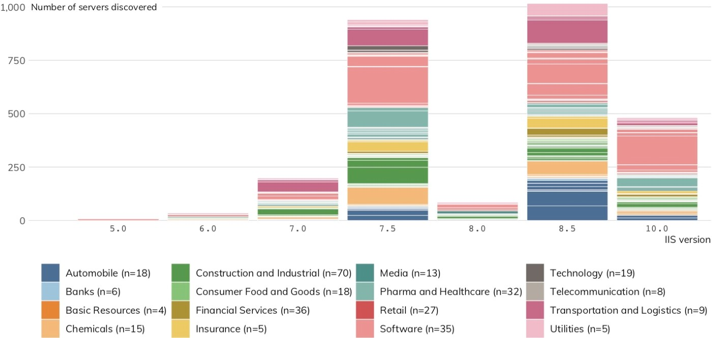
Figure 15 shows the “version dispersion” (how many different instances of IIS a single organization maintains) of IIS servers across DB 320 industries. Just over 39% maintain a single version of IIS, with nearly 32% running over three separate versions. This version diversity and the continued use of IIS versions that have reached end-of-life increases defense and management complexity and further increases the likelihood of down-version IIS servers becoming an intrusion conduit for attackers.
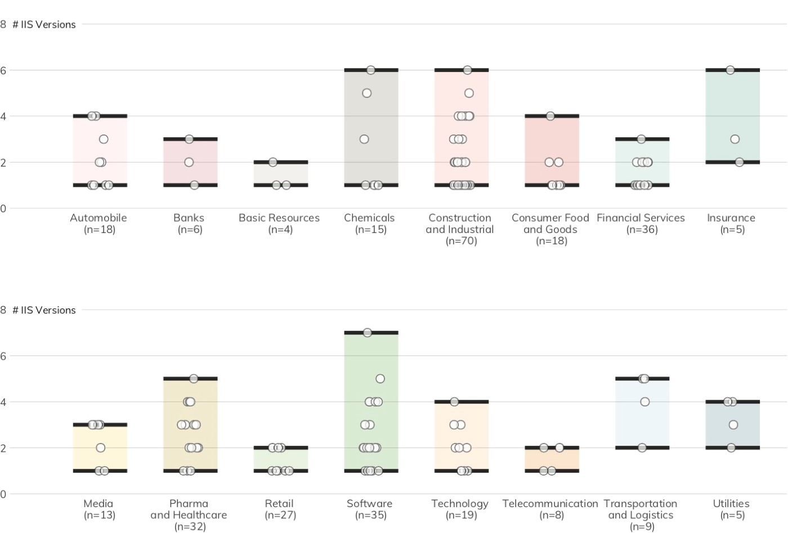
Apache HTTPD
The web server version picture is a bit more complex when we look at Apache. Figure 17 shows that Project Sonar discovered 2,272 attributed Apache servers with 53 distinct version numbers in 158 organizations spanning 17 of 19 DB 320 sectors. The Apache version dispersion chart shows that nearly half the organizations (47%) only expose a single version of Apache HTTPD, and just over 35% of organizations expose three or more distinct versions—which, again, increases the management complexity.
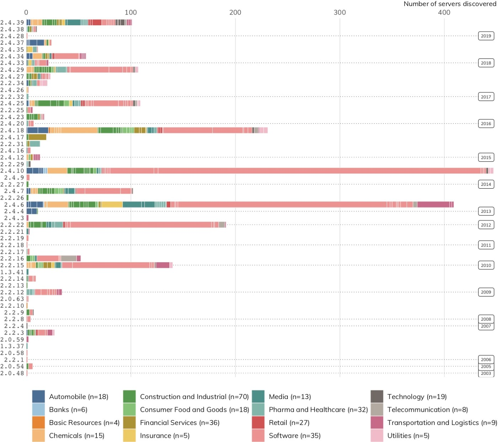
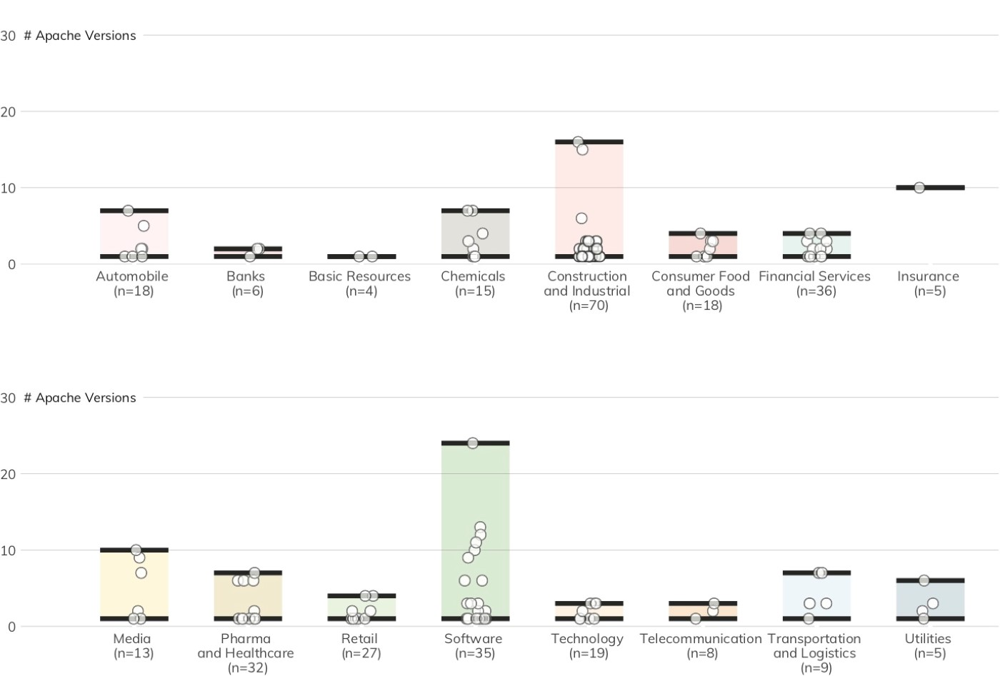
While the software version diversity alone is disconcerting, the fact that most discovered versions are well over a year old is an indicator organizations aren’t keeping Apache installations up-to-date. Unlike IIS, organizations must use a third-party vulnerability management tool to catalog and identify the version and patch levels of Apache servers. The Apache Foundation regularly releases new versions to add features, fix problems, and patch security issues. Also, because Apache HTTPD is open source, attackers have full access to the source code and can more easily discover flaws and develop exploits.
nginx
The nginx web server may come in first in the August 2019 Netcraft survey, but it’s only No. 3 for the number of servers Project Sonar discovered among the DB 320 (982). Figure 18 shows that 53 distinct nginx server versions were found in 99 organizations spanning 17 of 19 DB 320 sectors.
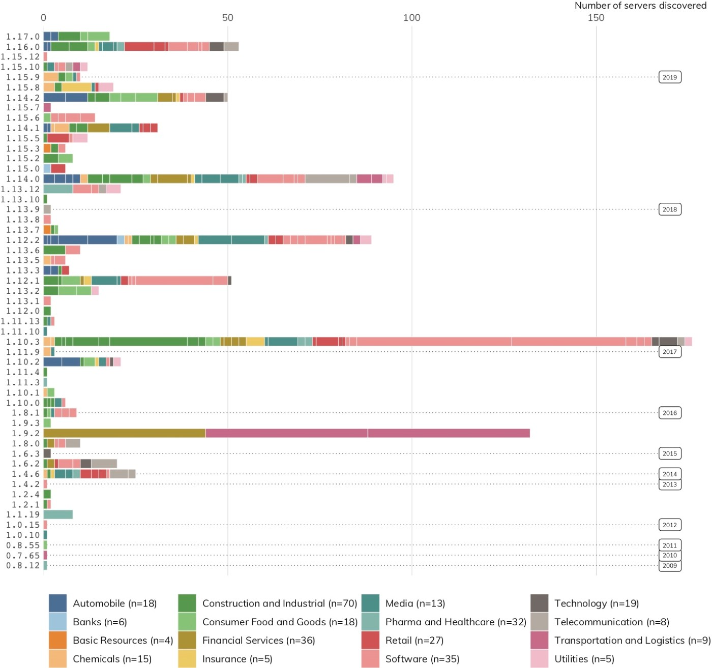
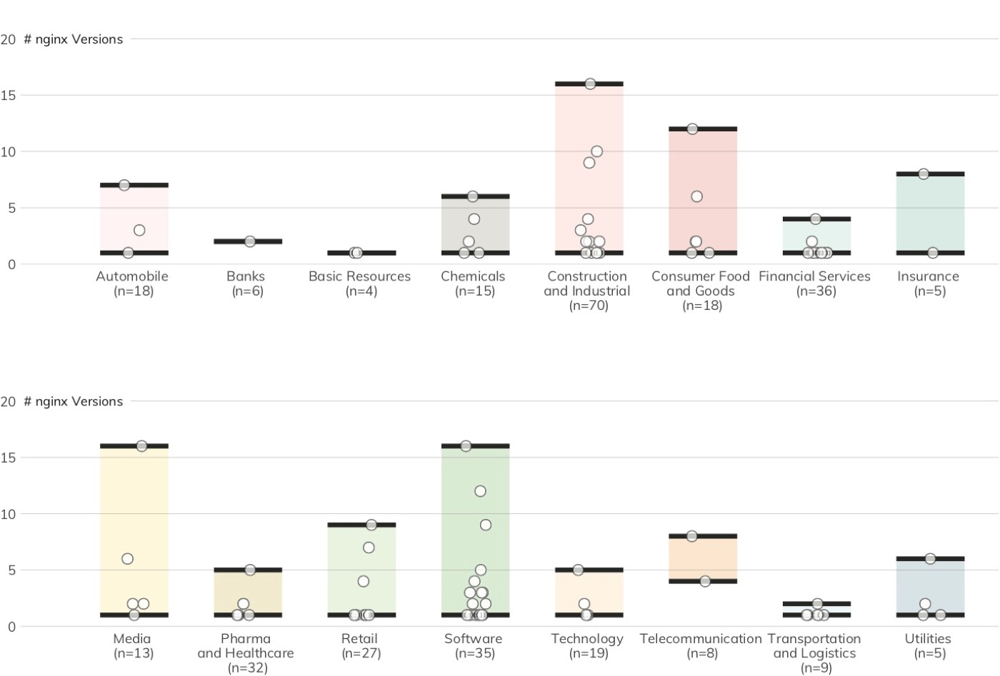
The nginx findings in Figure 19 are on par with the the Apache findings, with 50% of organizations running a single version and 32% running three or more.
While one could argue that maintaining the security posture of multiple versions of a single web server platform is well within the capabilities of mature operations teams, there are added complexities when more than one vendor’s technology is in play. For the DB 320,[25] nearly half the organizations maintain two or more different internet-facing web server vendor technologies (Table 2). The combined vendor and version diversity substantially increases the risk of overlooking configuration weaknesses that potential attackers are more than ready to find and exploit.
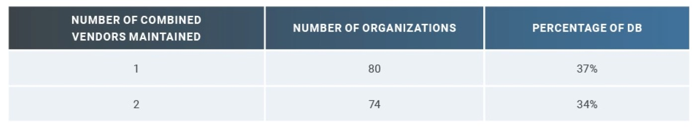
Recommendation: Strive for version consistency. The need to patch and maintain servers may sound trivial and obvious, but scheduling change control and orchestrating outages of what may be core services can be a complex undertaking in large organizations. Though this task can be tedious, it’s vital that organizations keep an up-to-date inventory of what they’re exposing and work with their business and application teams to ensure they are using supported and patched versions of software.
[24] Netcraft August 2019 Web Server Survey,https://news.netcraft.com/archives/2019/08/15/august-2019-web-server-survey.html (Last accessed Aug. 12, 2019)
[25] Astute readers with a calculator or an overabundance of appendages will notice the middle column only tallies to 214. That’s due to the remaining sites using a CDN such as Cloudflare or Akamai, which masks the underlying server technology. We do not report on those versions since we cannot categorize the underlying server complexity.
Conclusions
The methodology outlined in this report describes several ways, based on openly available internet connections, to measure the exposure of specific organizations and industry sectors to certain cybersecurity risks. To reiterate, while far from a complete picture of the organizations’ overall cybersecurity posture, the results of this research indicate significant levels of exposure among Deutsche Börse Prime Standard 320 companies:
- Companies in the DB 320 expose an average of 88 servers/devices, with many companies exposing near or over 300 systems/devices. More systems mean more exposure to opportunistic and targeted attacks.
- An overwhelming majority (91%) of DB 320 companies do not use enhanced email safety configurations, with an additional 3% having invalid DMARC records, which creates a greater risk of phishing attacks. To reduce exposure, organizations should evaluate and strengthen their DMARC configuration settings.
- DB 320 organizations in every sector had serious issues with patch/version management of business-critical internet-facing systems. It is vital that organizations make configuration and patch management of internet-facing systems a top priority to avoid exploitation of known vulnerabilities in outdated software.
- 6% of DB 320 organizations do not require the use of HTTPS on their primary domains, putting visitors at serious risk for person-in-the-middle attacks.
- Dozens of exposed third-party services are shared among the DB 320 organizations, creating a greater risk that a vulnerability in a shared third party could lead to the compromise of multiple organizations. Organizations should ensure their third-party service providers take appropriate steps to strengthen their own security, as well as use tools such as subresource integrity signatures when sourcing these services to help reduce the likelihood of shared compromise.
- With only one exception, critically weak services such as Telnet and Windows file-sharing had only a light presence in the DB 320 corpus, but they were present. Each instance creates a greater risk of susceptibility to exploitation of SMB vulnerabilities. To reduce exposure, organizations should close port 445 whenever possible and migrate from Telnet to SSH.
Because the DB 320 organizations typically have substantial resources and access to excellent technical expertise, the findings suggest that the severity of exposure may be greater for the many thousands of organizations smaller than those in the DB 320. The digital ecosystem could benefit from an ongoing conversation with key stakeholders on the reasons for this continued exposure, along with steps to mitigate the cybersecurity risks it poses.
Measuring Industry Exposure: Methodology Overview
This report documents findings regarding organizations’ exposure to certain cybersecurity risks using data made available through interactions with public-facing systems over the internet. That data was then used to quantify the exposure of members of the Germany-centric DB 320, with results aggregated by industry sector. Measuring exposure at this level can help target cyber-risk reduction efforts, improve cybersecurity information-sharing within industry sectors, and build awareness of practices organizations can undertake to avoid future exposure.
Since 2016, Rapid7 has annually measured and reported on the exposure of specific countries to certain cybersecurity risks.[26] With this information, we engage country-level Computer Emergency Response Teams (CERTs) to analyze the exposure in more detail and support action to reduce their overt exposure of critical services. To generate these reports, Rapid7 uses our internet-wide scanning platform, Project Sonar,[27] and our passive sensor network, Project Heisenberg,[28] to determine whether online assets are advertising vulnerable internet services or making suspicious outbound connections. We then aggregate the results at the nation-state level.
Aggregating the exposure data to the nation-state level is relatively straightforward. We use high-quality, regularly updated databases that match country location to internet addresses, with over 98% accuracy.[29] However, it takes additional effort to measure exposure at a deeper level. More robust exposure measurement of specific organizations is possible by analyzing the dedicated internet address space that those organizations own and use as part of their business operations. After matching organizations to internet addresses, exposure to certain cybersecurity risks can be quantified through publicly available data obtained with active scans and passive sensors. This Methodology section details the steps involved in the following:
- Attributing internet addresses and primary internet domain names to DB 320 organizations;
- Using Project Sonar’s active scan data to identify exposure to vulnerable services and systems within the internet address space attributed to these organizations;
- Enhancing this exposure measurement by identifying the frequency and nature of interactions from this attributed internet address space with Rapid7’s Project Heisenberg global passive sensor network;
- Supplementing this direct exposure measurement with inferred exposure. To do this, we analyzed “metadata” from organizations’ attributed internet address space, such as email “safety” configurations stored in internet DNS records, and detectable operating system and application version information.
The measurements can be broken down into three primary areas, each of which is covered in the following sections:
- Inferential measurements using public DNS records, the most significant of which is the measurement of an organization’s defenses against phishing attacks;
- Active measurements using Rapid7’s Project Sonar, which includes measuring both the presence of public-facing systems and services as well as the content those systems and services expose; and
- Passive measurements using Rapid7’s Project Heisenberg, which records when systems from an organization’s network contact this honeypot collection and what actions they were trying to perform during these connections.
Active Measurements with Project Sonar
Project Sonar scans the internet across a wide array of services. A “service” could mean a web server, mail server, file server, database server, network equipment, or even cameras, along with many other types of servers that listen for requests over the internet. When a service on a given internet address responds positively to a probe, the positive result is recorded along with the response data. Depending on the service being scanned, this response data can include detailed version and configuration information of the scanned service.
Rapid7 adheres to the legal restrictions associated with internet scanning. As a result, the probes performed by Project Sonar never involve the use of credentials, exploits for known vulnerabilities, or payloads that may cause harm to the service being probed, no matter how obvious or well-known those passwords or exploits may be. While this places some limits on what we can scan and the types of service metadata we can retrieve, we can still capture a wide array of useful information.
A further, self-imposed restriction comes as a result of Rapid7’s “opt-out” process. Organizations may request that Rapid7 exempt specific internet address ranges from Project Sonar scans. Rapid7 obliges these requests and places the address range onto a blacklist that is restricted from the scanning process (Figure 20).
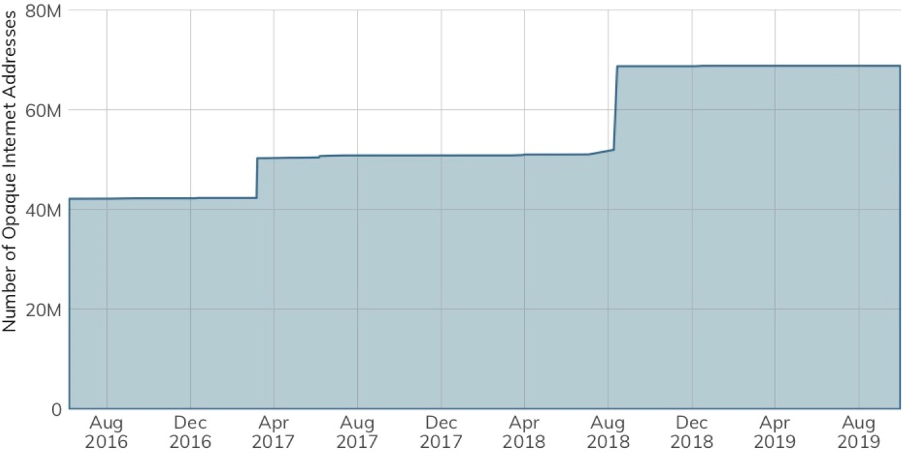
Unlike the 2018 ICER for the Fortune 500 corpus, there were no networks present on the opt-out blacklist from any organization in the Q2 2019 DB 320 list.[30]
Passive Measurements with Project Heisenberg
Rapid7’s Project Heisenberg is, at heart, nearly 250 unadvertised systems hosting a variety of fake services, such as HTTP, SMB, SSH, and many others. These honeypots are closely monitored for unsolicited connections but do nothing to attract or entice those connections. Other than internet-wide scanning research, there are no legitimate reasons for an organization to connect with the Heisenberg sensor network, so any recorded activity in Heisenberg is a high-quality indicator that an organization does not have control of its outbound connections—which further suggests either malicious activity or misconfigured service traffic coming from the organization. In essence, if there is any contact with Heisenberg, there is some type of exposure occurring in that organization.
Measuring Web Server Third-Party Risk
To get an idea of third-party risk when exposing web servers/service to the internet, we can examine the resources each web page loads when the page is loaded into a web browser. Project Sonar can perform this task at scale by controlling a virtual web browser, visiting the pages of the well-known domains of the organizations in the study, and capturing all the activity as each site loads resources.
These websites load a great quantity of third-party resources, so the complete list would be difficult to visualize and comprehend. The resultant list was pared down to only the most prevalent third-party resources used across the target study list.
[26] Rapid7, National Exposure Index, Jun. 7, 2018 https://www.rapid7.com/info/national-exposure-index (Last accessed Aug. 12, 2019)
[27] Rapid7, Project Sonar, https://www.rapid7.com/research/project-sonar (Last accessed Aug. 12, 2019)
[28] Rapid7, Project Heisenberg, https://www.rapid7.com/research/project-heisenberg (Last accessed Aug. 12, 2019)
[29] MaxMind, https://www.maxmind.com (Last accessed Aug. 12, 2019)
[30] Rapid7, Industry Cyber-Exposure Report: Fortune 500, pgs. 10–11, Dec. 11, 2018, https://www.rapid7.com/info/industry-cyber-exposure-report-fortune-500 (Last accessed Aug. 12, 2019)
Further Work
The processes and procedures used for the exposure analyses in this report are the initial steps at communicating the overall “cyber-health” of industries based on a subset of possible internet telemetry measurements. Possible measurement deficiencies have been identified and will be addressed in this section.
Improving Entity Internet Asset Attribution
The most common Internet Protocol (IP) address space (version 4, IPv4) is fully exhausted, meaning there are no “spare” blocks of IP addresses to assign an entity. However, organizations that currently do own IPv4 address space are not utilizing said space to capacity. The scarcity of this finite resource has resulted in the creation of a marketplace in which IPv4 space can be bought and sold.[31] While some long-standing organizations have sold portions of their IPv4 address space blocks to other parties, some retain ownership and manage the leasing of this space to others on their own. This practice results in attribution errors, which are especially vexing when corporate address space is leased in a non-attributable way to third-party hosting providers and/or cloud providers.
For this report, Rapid7 researchers initially used a manual process for both preliminary attribution attempts, as well as identification of attribution anomalies, by comparing address space utilization and service composition with that of known hosting and cloud service providers. As noted in the Methodology section, this approach was enhanced using directly attributable resources from organizations’ DNS records and inferring organization-owned IPv4 space from these records. Further work will be performed to shore up IP space attribution and automate this classification, which will enable filtering out hosting and cloud service provider blocks at scale.
Note especially that this combination of RIPE-attributed owned IPv4 space and DNS record resource attribution approach differs from that of Rapid7’s inaugural Fortune 500 ICER in 2018 and the ASX 200 and Nikkei 225 ICERs in 2019.
Avoiding Opt-Out Opacity
Research work like this report depends on continuous, light-touch scanning like the kind provided by Rapid7’s Project Sonar, so if enough organizations decide to opt out of these scans, the internet research community will undoubtedly suffer. There are two future paths that can reduce the impact of the Project Sonar “opt-out” list opacity issue. As a responsible internet citizen, Rapid7 keeps the opt-out list process in place, but it may be possible to augment current processes and have the opt-out be an annual process whereby organizations may re-acknowledge their desire to have their IPv4 space remain on the opt-out list. This would provide an opportunity to restate the advantages of allowing Project Sonar scans, reduce the size of the opt-out list, and preserve the statistical integrity of the surveys.
The second path is to just expand the sample size to cover more industry participants regardless of where their headquarters are located. To this end, there are other notable organization lists—e.g., Inc. 5000, S&P 500, ASX 200, FTSE 250, DAX 30—that can be mined to significantly expand the sample sizes in each industry and reduce the size of the opaque IPv4 address space to (perhaps) less than 1%. The previously noted attribution accuracy and expansion enhancements are key components to ensuring the validity and efficacy of this expansion process.
Utilizing More DNS Records
The email safety analyses utilized the well-known DNS domains of the organizations on the DB 320 list. Most of those corporations have subsidiaries and brands, each with their own set of DNS domains, and these brand-domains were used to enhance the coverage of the exposure analysis. Further work will be performed to develop a machine learning-based web-crawling and data-mining process to identify these additional domains and incorporate the data associated with them into the analysis framework used in this report.
Expanding Resource Safety Evaluation
The further work to discover additional domain names will have a direct impact on the email safety analyses used for this report. Furthermore, this report only looked at one aspect of email safety, DMARC. There are additional resource records that describe other email safety configurations, such as Sender Policy Framework (SPF), which further helps reduce spam and prevents attackers from misusing email domains. This will be included in future analyses.
Other types of DNS records (i.e., non-email-related ones) also communicate different types of both exposure and safety. That information will also be explored for inclusion in future analyses.
Third-Party Dependency/Risk Analyses
Finally, by analyzing the overall configuration of an organization’s DNS records, discovering how an organization’s IPv4 networks are routed on the internet, enumerating which third-party resources an organization relies upon in its web and web application services, and other indirect, public measurements, it is possible to report on both the potential fragility of an organization’s overall internet presence and provide exposure views of third-party dependencies across all organizations.
[31] IPv4 Brokers, ARIN IPv4 Market Prices & Transfer Statistics, https://ipv4brokers.net/arin-ipv4-prices-transfer-statistics/ (Last accessed Aug. 12, 2019)
Study Methodology
Why the Deutsche Börse Prime Standard 320
Aggregating exposure for specific Germany-based industry sectors poses a unique problem. First, IP address space is fairly expansive. IPv4 alone supports over 4.2 billion addresses (a portion of which are not assignable), without taking into consideration the exponentially more massive IPv6 space. These addresses are assigned to various governments, companies, and service providers around the world. Second, with the onset of dynamic infrastructure (the cloud), it is increasingly common for companies to lease IP address space from other companies to host their services. This makes traditional methods of attributing IP addresses to particular organizations (such as by using the WHOIS lookup tool) incomplete, since the owner of the IP address may not be the owner of the service evaluated for exposure.[32]
Instead of attributing IP addresses to companies and filtering by Deutsche Börse Prime Standard 320 industries, we focus on the Q3 2019 list as a representative sample, from which we attribute and filter global IP address space and services hosted on dynamic infrastructure.
The Q3 2019 Deutsche Börse Prime Standard 320 list was chosen for many reasons. First, it is a diverse list (see Table 3) chosen using well-established criteria[33] for selecting firms for inclusion. When revenues are combined, the composite list equates to approximately 6% (gross income basis) of Germany’s GDP, with aggregate employment reaching over 7 million individuals globally. Furthermore, 90% (289) of these organizations are incorporated in Germany, enabling the creation of a Germany-centric view of exposure and the development of potential economic impact models.
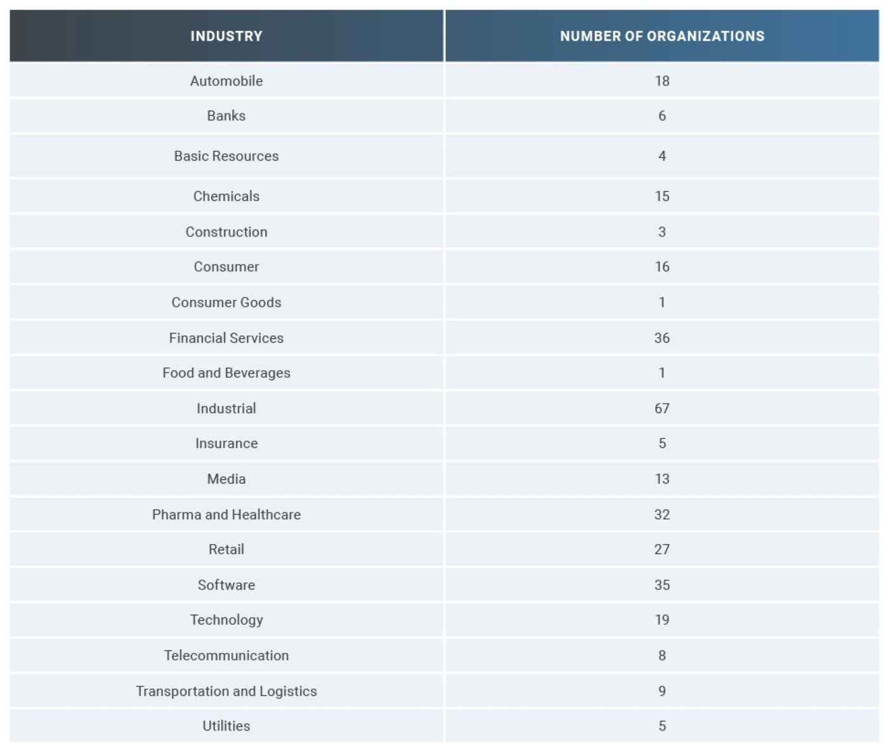
Six companies (1&1 Drillisch, 3U Net, ecotel, freenet, QSC, and Telefónica) provide cloud, internet, and/or mobile services. As a result, they each have large ranges of internet-facing subnets. When performing the initial exploratory data analysis for the report, it became evident that there was sufficient co-mingling of corporate and service provider internet-facing IPv4 space that using these network ranges in either the Sonar or Heisenberg-based device counts would have skewed the results, so they have been omitted from those sections. However, their primary domains and corporate websites were included in the remaining analyses.
To help prevent de-anonymization of some DB 320 constituents, “Consumer,” “Consumer Goods,” and “Food and Beverages” have been merged into one “Consumer Food and Goods” meta-industry and “Construction” and “Industrial” have also been merged into a “Construction and Industrial” meta-industry.
Finally, DB 320 member organizations attract and employ top talent at every level. This includes internal and external network and systems management personnel, as well as highly skilled and experienced application development and operations staff. Many of these organizations have representatives on committees who provide leadership and governance of groups that develop IT and internet standards—a large number of these organizations have been incorporated for over 20 years and were early adopters of internet technologies. In other words, if there are exposure issues in this group of organizations, it may signal that exposure conditions are even more substantial in companies that do not have a similar stature.
Organization Internet Asset and Metadata Attribution Methodology
The Internet Assigned Numbers Authority (IANA) coordinates the governance of key elements that enable smooth operation of the internet.[34] Two key governance elements relevant to the process of attribution include internet address space (or “IP” addresses) and domain names (the system that helps turns web addresses such as http://www.example.com/ into internet addresses so systems can connect to internet resources).
Attributing Internet Address Space to an Organization
IANA delegates the management of internet address space to a small number of global and regional internet registries. These registries further delegate blocks of internet addresses and coordinate the metadata associated with these assignments to national and “local” registries that ultimately coordinate with internet service providers (ISPs), which assign internet addresses to users and organizations.
The metadata associated with these internet address assignments, such as the organization names, location information, points of contact, and potentially the parent internet service provider, is stored in a distributed set of databases called the WHOIS service. The WHOIS service is a public resource that allows a user to retrieve information about an IP number, including the organization that owns the internet address and the organization’s point of contact. Each registry maintains its own WHOIS database.[35] Individuals can use WHOIS to make interactive queries to these systems, and bulk copies of WHOIS database information are made available to organizations that will use the data for technical research purposes.
When an organization wishes to manage its own internet-connected resources, it makes a request to a local ISP or local registry and is assigned one or more contiguous sets of addresses to use. This attribution metadata is stored in the appropriate WHOIS service. To illustrate what this looks like, Table 4 shows the internet address block assignments for Rapid7:
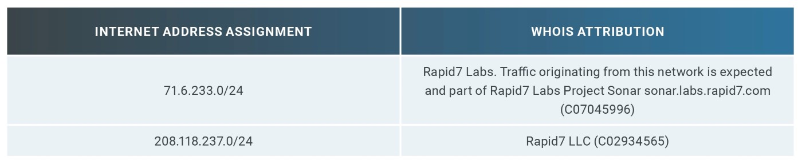
Unlike the Fortune 500 ICER, using the IANA registry methodology to locate DB 320 company-owned space proved to be far easier given the level of detail provided in the RIPE network allocation database.[36] Over 90% of organizations had identifiable entries in the RIPE IPv4 registry. That does not mean the other 10% do not have blocks assigned to them, but it does mean there is an increase in the error rates when attempting to attribute those blocks.
As mentioned above, care was taken to avoid the inclusion of IPv4 ranges of organizations that also act as end-user or business internet service providers or cloud service providers.
Attributing DNS Records to an Organization
A similar WHOIS registration and database service exists for DNS assignments, except this is a far more distributed service that places direct control of all the underlying records for a domain into the hands of an organization. Once assigned a domain name (e.g., “rapid7.com”), an organization sets up its own DNS server (or uses one from a DNS service provider or cloud provider), then publishes and maintains records that map DNS names to a wide array of record types and values. Organizations can add, change, or delete records at will.
DNS “A” (address) records map names to internet addresses (e.g., <www.rapid7.com> currently maps to 13.33.37.212), but it is also possible to associate other types of information with an internet name.
DNS “TXT” (text) records facilitate storing arbitrary text strings with internet names. A number of formal standards exist that provide rules for crafting specially formatted text records to convey additional metadata about that internet name resource or the domain name’s proper owner.
DMARC[37] and the SPF[38] are two key TXT records for inferring the “safety” of an organization’s email configuration. These standards enable an organization to communicate which systems are authorized to send mail on its behalf and what should be done with forged emails sent by attackers or spammers. Missing, improperly configured, or overly permissive configurations of these records put organizations at risk for both increased spam and phishing attacks. Since phishing attacks have been the primary means of attackers gaining a foothold within an organization for the past few years, lack of care and attention to appropriate DMARC and SPF configuration significantly increases the likelihood of successful attacks against that organization. Anyone can query the DNS for these and other records. As part of our research efforts into ecosystem-wide cybersecurity, Rapid7 performs millions of DNS lookups every month and stores the time-stamped record results in a large, historical database, which makes it possible to perform large-scale queries and track changes over time.
The Q3 2019 DB 320 list includes the primary, well-known domain names of the members of the list. For example, “www.volkswagenag.com” is the well-known domain for Volkswagen (an automobile manufacturing organization). These sites were systematically scanned by Project Sonar, and the associated DNS names for the attributed organizations were used to determine the presence of DMARC and SPF.
[32] ICANN WHOIS, https://whois.icann.org/en (Last accessed Aug. 12, 2019)
[33] Deutsche Börse Prime Standard, https://www.deutsche-boerse-cash-market.com/dbcm-en/primary-market/market-structure/segments/prime-standard (Last accessed Aug. 12, 2019)
[34] Internet Assigned Numbers Authority, https://www.iana.org/ (Last accessed Aug. 12, 2019)
[35] RIPE WHOIS Database Index, https://www.ripe.net/about-us/ (Last accessed Aug. 12, 2019)
[36] RIPE Database, https://apps.db.ripe.net/db-web-ui/#/fulltextsearch (Last accessed Aug. 12, 2019)
[37] The DMARC Standard, https://dmarc.org/ (Last accessed Aug. 12, 2019)
[38] RFC 7208, Sender Policy Framework, Apr. 2014 https://tools.ietf.org/html/rfc7208 (Last accessed Aug. 12, 2019)
About Rapid7
Rapid7 (Nasdaq: RPD) is advancing security with visibility, analytics, and automation delivered through our Insight cloud. Our solutions simplify the complex, allowing security teams to work more effectively with IT and development to reduce vulnerabilities, monitor for malicious behavior, investigate and shut down attacks, and automate routine tasks. Over 7,200 customers rely on Rapid7 technology, services, and research to improve security outcomes and securely advance their organizations. For more information, visit our website, check out our blog, or follow us on Twitter.